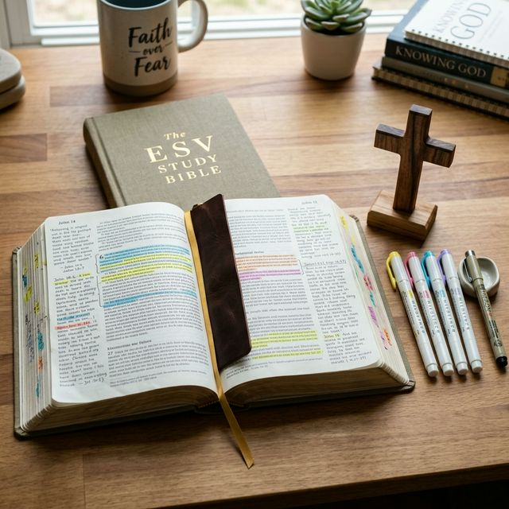

Les outils indispensables pour bien méditer
La méditation biblique nécessite peu de choses. Cependant, certains accessoires peuvent aider à structurer ce moment précieux.
Voici ce que je conseille d'avoir à portée de main :
- Une Bible pour l'étude : Pour pouvoir prendre des notes et annoter les textes personnels.
- Un cahier de notes : Pour consigner les pensées et les réflexions au fur et à mesure.
- Un environnement calme : Un coin dédié chez soi ou un endroit paisible à l'extérieur.
- Quelques surligneurs : Pour mettre en évidence les versets marquants.

Les versets pour débuter
Si vous ne savez pas par quel texte commencer, je suggère de méditer les Psaumes. Le Psaume 1 est particulièrement approprié puisqu'il parle de l'homme qui médite la loi du Seigneur jour et nuit, comme un arbre planté près d'un courant d'eau.
Vous pouvez aussi commencer par l'Évangile selon Jean pour sa profondeur spirituelle et poétique.